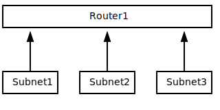

Routing between networks¶
General concept¶
A router in Binero cloud allows you to perform routing between networks and to provide incoming and outgoing access to the internet.
The router will connect to different subnets using an interfaces that connects to a network.
A standard router typically routes automatically between all its connected subnets (that is, subnets on which the router has an IP address).
A router in Binero cloud works the same way, traffic received by a router destined to a connected network on that router will traverse through the router.
If the destination network is unknown to the router, it will use its default route that normally is facing the internet.
Note
If you for some reason want to use an instance as a router (perhaps you prefer some software based routing suite) instead of a router, this is a viable use case.
Just create an instance with the correct interfaces setup on the different subnets. We recommend using a router as some features in the platform depends on having one setup.
Instance configuration¶
A compute instance will also use routing to decide on what interface to egress traffic. It will do this based on destination and its routing table.
Three main scenarios exist:
Traffic destined for networks on which the instance itself has an IP address (locally connected networks) will take precedence and the instance will instead use ARP to lookup the MAC address of the receiving instance and send traffic directly to it.
Traffic destined to a subnet that is in the instances routing table uses the next hop (or gateway) of that route, as stated in the routing table. The next hop would typically be a router.
Finally, traffic destined to somewhere that is unknown to the instance (not in its routing table).
This traffic is (provided one is setup) sent to the instances default route (the route used when no more specific route exists). When creating a subnet in Binero cloud, a default gateway is normally define for that subnet. The IP that is the default gateway is normally connected to a router.
Tip
While its possible to connect an instance to many networks each with different routers, this will require you to maintain static routes on the instances themselves (according to the middle option above).
You can perform this with DHCP but is still cumbersome and will add complexity in maintaining the firewall when traffic ingress and egress through different interfaces.
An easier approach is to use just a single interface facing a single router which becomes responsible for handling the upstream routing. In this scenario, only the first and third examples according to above relevant.
Single router¶
The easiest routing setup (which is the one we recommend, if not using more then one availability zone) is using a single router with many subnets connected.
Reasons for wanting to route between different subnets might be:
Wanting to have different security zones where you force traffic through the router.
Wanting to split different applications or users in their own networks.
Wanting to keep a staging system and production system separated.
If you use a single router, make sure its the default route for your instances (see Subnets), as routing between the networks would then work by default.
The typical caveat (if traffic is not flowing as expected) would be Security groups that (if not setup properly) blocks traffic.
Multi router¶

The typical use case for having many routers is to run a multi availability zone setup for geographic redundancy (along with many other use cases).
If you are considering designing your network with availability zones, we strongly recommend you to read our Networking regions and availability zones documentation which explains the concepts before proceeding.
When sending traffic (routing) between routers, its recommended to first setup the individual routers so that they work as intended on their own before proceeding to route between them.
When setting up routing between routers, we use a link network. This is a standard private subnet that will not connect to instances, just the different routers in the setup.
We recommend choosing an IP range for this subnet that is different from your production subnets where you run your instances and services.
Follow the below steps to setup routing between two (individually functioning) routers:
Create a new network (with a corresponding subnet) to use as link network.
Setup static routing for your destination networks to use the new link-network. You need to add static routing to all routers.
Depending on your settings, change or add security groups on instance facing ports to allow traffic.
Once you’ve completed the above steps, you will be able to forward traffic between routers from all instances behind the routers.
Dynamic routing¶
For wanting to use a dynamic routing protocol (most commonly BGP), you would need to use instances as routers.
Binero cloud only supports static routing in the routers.